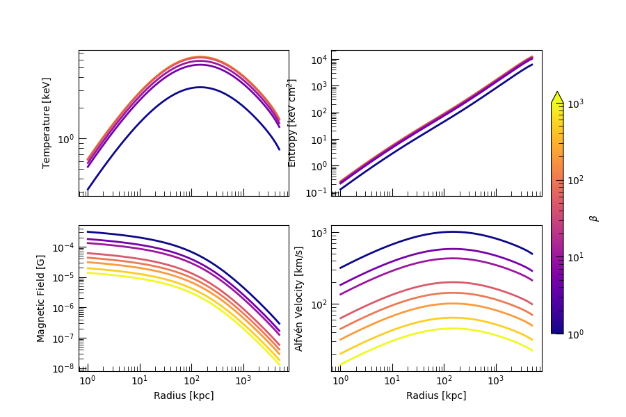

Note
Go to the end to download the full example code.
Build a Magnetized Galaxy Cluster#
This example generates a set of magnetized galaxy cluster models with varying magnetic pressure fractions (beta parameters) and compares their resulting temperature, entropy, magnetic field strength, and Alfven speed profiles.
Each model uses the same density profile but varies the magnetic support, demonstrating the effects of magnetization on thermodynamic quantities.
Setup#
In this example, we’ll use the MagnetizedSphericalGalaxyClusterModel
class to construct magnetized galaxy clusters with different degrees of physical support. This is
parameterized through the \(\beta\) parameter which is defined such that
With different values of \(\beta\), the temperature structure and various other thermodynamic properties of the clusters will vary.
To get started, we’ll need to import the relevant building blocks.
import tempfile
import numpy as np
import unyt
from pisces.models.galaxy_clusters import MagnetizedSphericalGalaxyClusterModel
# Import the model class and the construction profiles.
from pisces.profiles import NFWDensityProfile
Profiles#
To start building the models, we’ll need to create the initial profiles. A quick look at the documentation
for the model shows that the full cluster model can be built from a total density profile \(\rho_{\rm tot}\) and
a gas density profile \(\rho_{\rm gas}\). For realism, we’ll use a gas fraction close to 0.1, which is
pretty standard for most clusters. We’ll also use an NFW core density around \(5 \times 10^6 \;{\rm M_\odot\; kpc^{-3}}\).
# Construct the total profile.
total_density_profile = NFWDensityProfile(
rho_0=unyt.unyt_quantity(5e6, "Msun/kpc**3"), r_s=unyt.unyt_quantity(200, "kpc")
)
# Construct the gas density profile.
gas_density_profile = NFWDensityProfile(
rho_0=unyt.unyt_quantity(5e5, "Msun/kpc**3"), r_s=unyt.unyt_quantity(220, "kpc")
)
Model Construction#
Now that we have the density profiles, it’s an easy matter to generate the relevant profiles using
the from_density_and_total_density()
method. We’ll store the data files in a temporary directory and create a number of models for different values
of the \(\beta\) parameter.
# Create a temp directory.
tmpdir = tempfile.TemporaryDirectory()
# Define the selection of beta values
beta_set = [np.inf, 1000, 500, 200, 100, 50, 10, 5, 1]
# Set some parameters.
rmin, rmax = unyt.unyt_quantity(1, "kpc"), unyt.unyt_quantity(5, "Mpc")
models = {}
for beta_id, beta in enumerate(beta_set):
# Determine the filename.
filename = f"{tmpdir.name}/model_beta_{beta_id}.h5"
# Create the model
models[beta_id] = MagnetizedSphericalGalaxyClusterModel.from_density_and_total_density(
gas_density_profile,
total_density_profile,
filename,
min_radius=rmin,
max_radius=rmax,
num_points=500,
overwrite=True,
beta_profile=beta, # This sets the beta value.
)
Preparing metadata...: 0%| | 0/8 [00:00<?, ?it/s]
Generating grid...: 12%|█▎ | 1/8 [00:00<00:00, 93206.76it/s]
Building density...: 25%|██▌ | 2/8 [00:00<00:00, 1996.81it/s]
Adding Beta Profile...: 38%|███▊ | 3/8 [00:00<00:00, 1928.42it/s]
Computing masses...: 50%|█████ | 4/8 [00:00<00:00, 2399.14it/s]
Calculating potential...: 62%|██████▎ | 5/8 [00:00<00:00, 245.08it/s]
Calculating potential...: 75%|███████▌ | 6/8 [00:00<00:00, 18.47it/s]
Calculating temperature...: 75%|███████▌ | 6/8 [00:00<00:00, 18.47it/s]
Performing additional computations...: 88%|████████▊ | 7/8 [00:09<00:00, 18.47it/s]
COMPLETE: 88%|████████▊ | 7/8 [00:09<00:00, 18.47it/s]
COMPLETE: 100%|██████████| 8/8 [00:09<00:00, 1.49s/it]
Preparing metadata...: 0%| | 0/8 [00:00<?, ?it/s]
Generating grid...: 12%|█▎ | 1/8 [00:00<00:00, 107546.26it/s]
Building density...: 25%|██▌ | 2/8 [00:00<00:00, 2063.62it/s]
Adding Beta Profile...: 38%|███▊ | 3/8 [00:00<00:00, 2118.34it/s]
Computing masses...: 50%|█████ | 4/8 [00:00<00:00, 2623.49it/s]
Calculating potential...: 62%|██████▎ | 5/8 [00:00<00:00, 253.81it/s]
Calculating potential...: 75%|███████▌ | 6/8 [00:00<00:00, 18.28it/s]
Calculating temperature...: 75%|███████▌ | 6/8 [00:00<00:00, 18.28it/s]
Performing additional computations...: 88%|████████▊ | 7/8 [00:09<00:00, 18.28it/s]
COMPLETE: 88%|████████▊ | 7/8 [00:09<00:00, 18.28it/s]
COMPLETE: 100%|██████████| 8/8 [00:09<00:00, 1.48s/it]
Preparing metadata...: 0%| | 0/8 [00:00<?, ?it/s]
Generating grid...: 12%|█▎ | 1/8 [00:00<00:00, 135300.13it/s]
Building density...: 25%|██▌ | 2/8 [00:00<00:00, 2245.95it/s]
Adding Beta Profile...: 38%|███▊ | 3/8 [00:00<00:00, 2249.36it/s]
Computing masses...: 50%|█████ | 4/8 [00:00<00:00, 2779.53it/s]
Calculating potential...: 62%|██████▎ | 5/8 [00:00<00:00, 255.12it/s]
Calculating potential...: 75%|███████▌ | 6/8 [00:00<00:00, 18.48it/s]
Calculating temperature...: 75%|███████▌ | 6/8 [00:00<00:00, 18.48it/s]
Performing additional computations...: 88%|████████▊ | 7/8 [00:09<00:00, 18.48it/s]
COMPLETE: 88%|████████▊ | 7/8 [00:09<00:00, 18.48it/s]
COMPLETE: 100%|██████████| 8/8 [00:09<00:00, 1.49s/it]
Preparing metadata...: 0%| | 0/8 [00:00<?, ?it/s]
Generating grid...: 12%|█▎ | 1/8 [00:00<00:00, 139810.13it/s]
Building density...: 25%|██▌ | 2/8 [00:00<00:00, 2269.03it/s]
Adding Beta Profile...: 38%|███▊ | 3/8 [00:00<00:00, 2271.28it/s]
Computing masses...: 50%|█████ | 4/8 [00:00<00:00, 2743.17it/s]
Calculating potential...: 62%|██████▎ | 5/8 [00:00<00:00, 253.25it/s]
Calculating potential...: 75%|███████▌ | 6/8 [00:00<00:00, 18.54it/s]
Calculating temperature...: 75%|███████▌ | 6/8 [00:00<00:00, 18.54it/s]
Performing additional computations...: 88%|████████▊ | 7/8 [00:09<00:00, 18.54it/s]
COMPLETE: 88%|████████▊ | 7/8 [00:09<00:00, 18.54it/s]
COMPLETE: 100%|██████████| 8/8 [00:09<00:00, 1.48s/it]
Preparing metadata...: 0%| | 0/8 [00:00<?, ?it/s]
Generating grid...: 12%|█▎ | 1/8 [00:00<00:00, 135300.13it/s]
Building density...: 25%|██▌ | 2/8 [00:00<00:00, 2160.90it/s]
Adding Beta Profile...: 38%|███▊ | 3/8 [00:00<00:00, 2202.51it/s]
Computing masses...: 50%|█████ | 4/8 [00:00<00:00, 2720.92it/s]
Calculating potential...: 62%|██████▎ | 5/8 [00:00<00:00, 252.43it/s]
Calculating potential...: 75%|███████▌ | 6/8 [00:00<00:00, 18.50it/s]
Calculating temperature...: 75%|███████▌ | 6/8 [00:00<00:00, 18.50it/s]
Performing additional computations...: 88%|████████▊ | 7/8 [00:09<00:00, 18.50it/s]
COMPLETE: 88%|████████▊ | 7/8 [00:09<00:00, 18.50it/s]
COMPLETE: 100%|██████████| 8/8 [00:09<00:00, 1.48s/it]
Preparing metadata...: 0%| | 0/8 [00:00<?, ?it/s]
Generating grid...: 12%|█▎ | 1/8 [00:00<00:00, 139810.13it/s]
Building density...: 25%|██▌ | 2/8 [00:00<00:00, 2313.46it/s]
Adding Beta Profile...: 38%|███▊ | 3/8 [00:00<00:00, 2268.83it/s]
Computing masses...: 50%|█████ | 4/8 [00:00<00:00, 2798.07it/s]
Calculating potential...: 62%|██████▎ | 5/8 [00:00<00:00, 254.08it/s]
Calculating potential...: 75%|███████▌ | 6/8 [00:00<00:00, 18.48it/s]
Calculating temperature...: 75%|███████▌ | 6/8 [00:00<00:00, 18.48it/s]
Performing additional computations...: 88%|████████▊ | 7/8 [00:09<00:00, 18.48it/s]
COMPLETE: 88%|████████▊ | 7/8 [00:09<00:00, 18.48it/s]
COMPLETE: 100%|██████████| 8/8 [00:09<00:00, 1.48s/it]
Preparing metadata...: 0%| | 0/8 [00:00<?, ?it/s]
Generating grid...: 12%|█▎ | 1/8 [00:00<00:00, 144631.17it/s]
Building density...: 25%|██▌ | 2/8 [00:00<00:00, 2310.91it/s]
Adding Beta Profile...: 38%|███▊ | 3/8 [00:00<00:00, 2298.67it/s]
Computing masses...: 50%|█████ | 4/8 [00:00<00:00, 2797.60it/s]
Calculating potential...: 62%|██████▎ | 5/8 [00:00<00:00, 253.65it/s]
Calculating potential...: 75%|███████▌ | 6/8 [00:00<00:00, 18.37it/s]
Calculating temperature...: 75%|███████▌ | 6/8 [00:00<00:00, 18.37it/s]
Performing additional computations...: 88%|████████▊ | 7/8 [00:09<00:00, 18.37it/s]
COMPLETE: 88%|████████▊ | 7/8 [00:09<00:00, 18.37it/s]
COMPLETE: 100%|██████████| 8/8 [00:09<00:00, 1.47s/it]
Preparing metadata...: 0%| | 0/8 [00:00<?, ?it/s]
Generating grid...: 12%|█▎ | 1/8 [00:00<00:00, 99864.38it/s]
Building density...: 25%|██▌ | 2/8 [00:00<00:00, 2132.34it/s]
Adding Beta Profile...: 38%|███▊ | 3/8 [00:00<00:00, 2179.99it/s]
Computing masses...: 50%|█████ | 4/8 [00:00<00:00, 2698.60it/s]
Calculating potential...: 62%|██████▎ | 5/8 [00:00<00:00, 253.08it/s]
Calculating potential...: 75%|███████▌ | 6/8 [00:00<00:00, 18.10it/s]
Calculating temperature...: 75%|███████▌ | 6/8 [00:00<00:00, 18.10it/s]
Performing additional computations...: 88%|████████▊ | 7/8 [00:09<00:00, 18.10it/s]
COMPLETE: 88%|████████▊ | 7/8 [00:09<00:00, 18.10it/s]
COMPLETE: 100%|██████████| 8/8 [00:09<00:00, 1.47s/it]
Preparing metadata...: 0%| | 0/8 [00:00<?, ?it/s]
Generating grid...: 12%|█▎ | 1/8 [00:00<00:00, 139810.13it/s]
Building density...: 25%|██▌ | 2/8 [00:00<00:00, 2313.46it/s]
Adding Beta Profile...: 38%|███▊ | 3/8 [00:00<00:00, 2304.56it/s]
Computing masses...: 50%|█████ | 4/8 [00:00<00:00, 2808.84it/s]
Calculating potential...: 62%|██████▎ | 5/8 [00:00<00:00, 255.65it/s]
Calculating potential...: 75%|███████▌ | 6/8 [00:00<00:00, 18.39it/s]
Calculating temperature...: 75%|███████▌ | 6/8 [00:00<00:00, 18.39it/s]
Performing additional computations...: 88%|████████▊ | 7/8 [00:09<00:00, 18.39it/s]
COMPLETE: 88%|████████▊ | 7/8 [00:09<00:00, 18.39it/s]
COMPLETE: 100%|██████████| 8/8 [00:09<00:00, 1.48s/it]
Extract and Plot Results#
Once the models are generated, we can extract their radial profiles and visualize how magnetic support modifies the cluster structure. We’ll focus on temperature, entropy, magnetic field strength, and Alfvén velocity.
import matplotlib.pyplot as plt
from matplotlib.colors import LogNorm
plt.rcParams["xtick.major.size"] = 8
plt.rcParams["xtick.minor.size"] = 5
plt.rcParams["ytick.major.size"] = 8
plt.rcParams["ytick.minor.size"] = 5
plt.rcParams["xtick.direction"] = "in"
plt.rcParams["ytick.direction"] = "in"
# Fields to extract and plot
fields_to_plot = ["temperature", "entropy", "magnetic_field", "alfven_velocity"]
field_units = ["keV", "keV*cm**2", "G", "km/s"]
field_labels = {
"temperature": r"Temperature [$\mathrm{keV}$]",
"entropy": r"Entropy [$\mathrm{keV\ cm^2}$]",
"magnetic_field": r"Magnetic Field [$\mathrm{G}$]",
"alfven_velocity": r"Alfvén Velocity [$\mathrm{km/s}$]",
}
# Setup the figures.
fig, axes = plt.subplots(2, 2, figsize=(9, 6), sharex=True)
axes = axes.flatten()
norm = LogNorm(vmin=np.amin(beta_set), vmax=np.amax(beta_set[1:]))
colors = plt.cm.plasma(norm(np.asarray(beta_set)))
# Cycle through each plot and then each model and plot
# the results.
for ax, field, units in zip(axes, fields_to_plot, field_units):
label = field_labels[field]
for beta_id, model in models.items():
beta = beta_set[beta_id]
ax.plot(model.grid["r"].d, model[field].to_value(units), lw=2, color=colors[beta_id])
ax.set_xscale("log")
ax.set_yscale("log")
ax.set_ylabel(label)
axes[-2].set_xlabel(r"Radius [kpc]")
axes[-1].set_xlabel(r"Radius [kpc]")
# Create a scalar mappable for the colorbar
import matplotlib as mpl
# Normalize and colormap (log-scale)
sm = mpl.cm.ScalarMappable(cmap=plt.cm.plasma, norm=norm)
sm.set_array([])
# Create the colorbar with a triangle tip on the upper end
cbar = fig.colorbar(sm, ax=axes, orientation="vertical", fraction=0.025, pad=0.02, extend="max")
cbar.set_label(r"$\beta$")
plt.show()

Total running time of the script: (1 minutes 24.612 seconds)